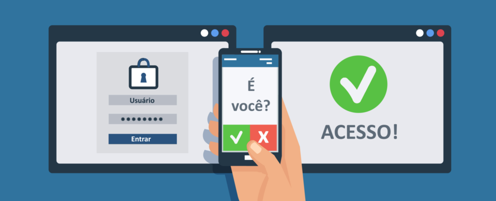

O que é Autenticação?
Você já se perguntou como seu celular ou computador sabe que você é você? A resposta está na autenticação, um processo essencial para proteger suas informações pessoais e garantir que só você tenha acesso a certos serviços. Vamos explorar esse conceito de forma simples e prática!
Pergunta 1:
Qual é a principal função da autenticação?
Tipos Comuns de Autenticação
Existem várias formas de autenticação, e aqui estão as mais comuns:
- Senha: A forma mais tradicional. Você cria uma senha que só você conhece.
- PIN (Número de Identificação Pessoal): Geralmente usado em dispositivos móveis.
- Biometria: Impressão digital, reconhecimento facial ou íris.
- Autenticação em dois fatores (2FA): Combina senha com outro método, como um código enviado para seu celular.
Pergunta 2:
O que é a autenticação em dois fatores?
Por Que a Autenticação é Importante?
Imagine que alguém consiga acessar sua conta bancária ou e-mail. Isso pode causar muitos problemas, como roubo de identidade ou perda financeira. A autenticação ajuda a prevenir esses riscos, garantindo que apenas você possa acessar suas informações.
Pergunta 3:
Qual é o principal risco de não usar autenticação adequada?
Política de Segurança
Aqui estão algumas dicas para manter suas contas seguras:
- Use senhas fortes: Combine letras maiúsculas, minúsculas, números e símbolos.
- Ative a autenticação em dois fatores: Isso adiciona uma camada extra de segurança.
- Mantenha seus dispositivos atualizados: Atualizações corrigem vulnerabilidades.
- Cuidado com e-mails suspeitos: Phishing é uma tática comum para roubar suas credenciais.
Pergunta 4:
Por que ativar a autenticação em dois fatores é recomendado?
Conclusão
A autenticação é uma parte crucial da nossa vida digital, protegendo nossas informações e garantindo que só nós possamos acessar nossas contas. Compreender como funciona e como melhorar sua segurança pode fazer uma grande diferença.